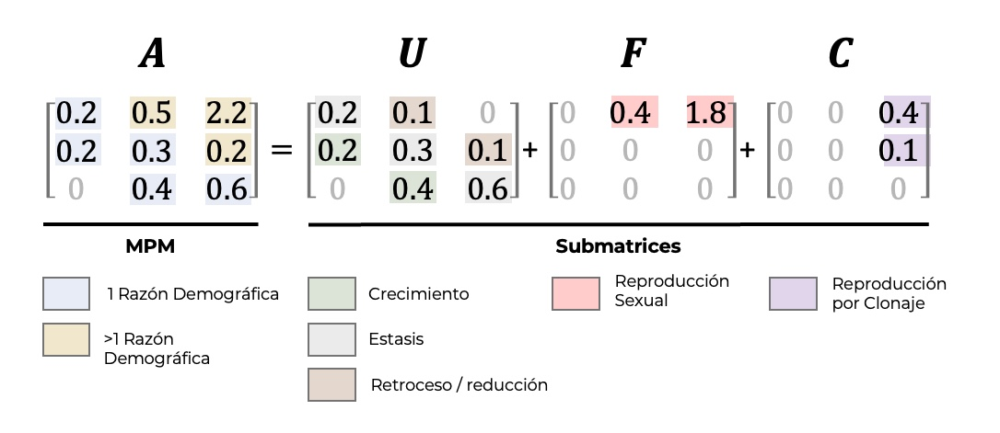

library(DiagrammeR)
library(Rage)
matU <- rbind(
c(0.1, 0.0, 0.0),
c(0.5, 0.3, 0.05),
c(0.001, 0.4, 0.8)
)
stages <- c("Plantulas", "Juvenil", "Adulto")
plot_life_cycle(matU, stages=stages)Matrices de transición, fecundidad y clonal
Raymond L. Tremblay
Tres tipos de matrices
Para facilitar los análisis e interpretaciones es necesario tener claro el ciclo de vida de la especie y el origen de los parámetros de transiciones, fecundidades y clonaje. Para lo cual, hay que recordar que la matriz A (matA), para evaluar varios de los parámetros del crecimiento poblacional, es el resultado de la suma de las submatrices de transición, de fecundidad y de clonación. Un ejemplo de por qué es necesario crear submatrices es que, para calcular la supervivencia promedia y sus intervalos de confianza, se necesita la matriz de transiciones matU separado de la matriz de fecundidad, mientras que para calcular la tasa de crecimiento poblacional, se necesita matA. En adición si uno quiere un estimado de la endogamia es importante reconocer la importancia de la clonación en la dinámica poblacional, se necesita incluir matC. Por consecuencia, es importante tener claro el ciclo de vida y la forma de reproducción de la especie que se está estudiando.
Definiciones de las matrices
- MatU = Matriz de Transiciones
- MatF = Matriz de Fecundidad
- MatC = Matriz de Clonación
- MatA = MatU + MatF + MatC

MatU: Matriz de transiciones
En la matriz de transiciones, matU se encuentra solamente entradas que representan transiciones: crecimiento, permanencia (estasis) o retrogresión (decrecimiento). Por consecuencia toda información sobre reproducción y clonación está excluida. Por ejemplo, tomemos un modelo que asume tres etapas de vida (Script 1), plántulas, juvenil y adultos, en donde podemos observar todas las transiciones posibles. Note que en este modelo los juveniles no pueden regresar a ser plántulas, ya que fisiológicamente las plántulas se comportan diferente de individuos que ya hayan desarrollado raíces y hojas (recuerde que los individuos incluido en un estadio deben presentar probabilidades similares de crecimiento, sobrevivencia y fecundidad). En tanto que los adultos si pudieran regresar a ser juveniles (por lo menos individuos no reproductivos), quizá como resultado de daño por herbivoría que reduciría su tamaño.
MatF: Matriz de fecundidad
Si uno sigue la figura resultante del Script 2. puede observar que algunos de los individuos en la segunda etapa pueden producir plántulas. Por consecuencia seria probablemente más adecuado cambiar de nombre para la segunda etapa de “juvenil” a “adultos pequeños”; debido que el concepto de juvenil pudiese ser confundido con individuos no reproductivos. Lo que se observa en el ciclo de vida son las aportaciones de plántulas que provienen de adultos pequeños y grandes. Esta separación de categorías de adultos (en este caso pequeños y grandes) es recomendables cuando las probabilidades de fecundidad son muy diferentes entre clases de tamaño, por ejemplo, en el caso de Guariante aurantica (Mondragón 2009) en donde al estudiar su demografía se decidió crear dos categorías de reproductivos r1 (altura del pseudobulbo entre 7 y 15 cm) y r2( pseudobulbo > 15 cm) en donde la producción de plántulas fue de 0.007, en tanto que la de los individuos r2 fue de 0.121.
library(DiagrammeR)
library(Rage)
matF <- rbind(
c(0.0, 0.4, 1.8),
c(0.0, 0.0, 0.0),
c(0.0, 0.0, 0.0)
)
stages <- c("Plantulas", "Ind Pequeños", "Ind Grande")
plot_life_cycle(matF, stages=stages)MatC = Matriz de clonación
Esa matriz representa la contribución de la reproducción asexual en la dinámica de la población. Primeramente, es muy importante entender que la propagación asexual da origen a un individuo ecológicamente independiente (ramet), aunque genéticamente sea el mismo individuo (genet) (Cook 1983). Tomemos el caso de un individuo de Epidendrum en el que la producción de nuevos tallos claramente NO es una reproducción ya que los tallos permanecen unidos y conectados (como las ramas de un árbol) y representan más una forma de crecimiento que una reproducción, ya que el destino demográfico de cada tallo es dependiente del destino de los otros tallos. Por el contrario, en el caso de Artorima erubensis en donde las cadenas de pseudobulbos pueden fraccionarse y cada sección tendrá un destino demográfico independiente del otro fragmento, en ese caso SI se podría estar hablando de una reproducción vegetativa (García-Soriano 2003). Esto quizá quede más claro para el caso de en especies de orquídeas que producen keikis, en donde cada keiki es un nuevo individuo ecológico que se agrega a la población, ya que al momento en que se separan de la madre, su crecimiento, su sobrevivencia y su fecundidad es independiente del destino de la madre.
Cabe destacar que la incorporación de nuevos ramets, no puede ser incorporada la información de nuevos individuos a la matriz de fecundidad matF (cuando esta es calculada vía plántulas) ya que el comportamiento de individuos generados a través de la propagación vegetativa es completamente diferente al de las plántulas, primeramente, desde su origen las plántulas provienen de semillas, mientras que los ramet son originadas a través de un meristemo, este origen también conlleva a que los ramets presenten tasas mucho mayores de crecimiento y sobrevivencia que el de las plántulas ya que reciben cuidados maternos (mientras estén conectados a la planta madre reciben nutrimentos y agua de ella). Así su incorporación en la matriz es generalmente en estadios superiores, como se puede ver en el scrip 3 en donde el aporte se hace a la categoría de los juveniles, note que esto provocará que en la matriz matA las transiciones (cuyos valores oscilan entre 0-1), pudiese tener valores superiores ya que la entrada en dicha matriz será la suma de la transición más la fecundidad vía ramets.
Es importante enfatizar que añadir el concepto de clonaje dentro de la matriz matU de transiciones resulta en estimados de parámetros diferentes, tal como el tamaño efectivo de población, Ne, en adición de evaluar otros conceptos evolutivos. En estudios evolutivos no es el individuo como tal que es la unidad de interés pero el individuo como fuente de diversidad genética, por consecuencia individuos (clones) que son genéticamente igual son evolutivamente el mismo individuos aunque estén separado físicamente. Las poblaciones organizados en clones afecta la interpretación de datos tanto en los estudios ecológico y evolutivos (Cook 1983).
Ramet y Genet
Cuando se estudia especies con clonación hay que diferenciar entre el crecimiento que es el “ramet” y un “genet”. Los “genets” son la suma de todas las partes “los ramets” que tiene la misma genética. Los “ramet”, son las partes individuales del individuo. En orquídea se podría considerar cada seudobulbo como un ramet y la suma de todos los seudobulbo como el “genet”. Hay acercamiento para tomar en cuenta la adecuación de los “individuos” en la matriz y por consecuencia integrar el concepto de clonación en los estimados, vea:(McGraw and Caswell 1996).
A continuación vemos un ejemplo de una matriz de clonación. El único ejemplo en la base de datos de COMPADRE es el de Cypripedium calceolus (Garcı́a, Goni, and Guzmán 2010). Aprovechamos para demostrar como extraer matrix caracteristica especifica de la base de datos de COMPADRE.
Activar paquetes
library(Rcompadre)
library(dplyr)
library(purrr)Decargar la base de datos de compradre
compadre <- cdb_fetch("compadre")Extraer MPMs con matriz de clonaje
Nota que se suma todos los valores de la matriz de clonaje (matC). Toda especie que tenga un valor mayor a 0 en la matriz de clonaje se considera que tiene clonaje en por lo menos una de las etapas de su ciclo de vida.
#Finding MPMs with clonality
compadre$clonality <- 0
for (i in 1:dim(compadre)[1]){
compadre$clonality[i] <- sum(compadre$mat[[i]]@matC) # suma de todos los valores de la matriz de clonación
}
# table(compadre$clonality) # Remover el "#" para ver los resultados,
head(table(compadre$clonality)) #Se observa la suma de las matrices de clonaje, hay 8162 especies que no tiene información en matC, una población con un matC que su suma es 0.001, etc.
0 0.001 0.0075 0.008006 0.008513 0.009
8162 1 1 1 1 1 Control de Calidad
Añade control de calidad a la base de datos (por ejemplo, para entradas faltantes en matA).
compadre_flagged <- cdb_flag(compadre, checks = "check_NA_A") # Evaluar que la matA no es nulaOrquídeas con clonaje
Ahora filtar para orquídeas solamente y para aquellos con matC no nulo (clonality >0). Se observa que solamente dos poblaciones tienen información de clonación.
orchid_clonal <- compadre_flagged %>%
filter(Family == "Orchidaceae") %>% # filtrar para orquideas
filter(clonality > 0) # filtrar para aquellos con matC no nulo
# Visualizar la base de datos de orquídea, se observa solamente dos matrices de clonaje
summary(orchid_clonal) Length Class Mode
1 CompadreDB S4 unique(orchid_clonal$SpeciesAuthor) # hay dos poblaciones solamente en toda la base de datos[1] "Cypripedium_calceolus_2" "Cypripedium_calceolus_3"El estudio de Cypripedium calceolus
Selecionamos solamente un ejemplo la Matriz de Cypripedium calceolus, #242621 (Garcı́a, Goni, and Guzmán 2010), que es la matrz promedio de la tercera población.
Cyp_cal_2 <- orchid_clonal %>%
filter(MatrixID == 242621)
Cyp_cal_2A COM(P)ADRE database ('CompadreDB') object with 1 SPECIES and 1 MATRICES.
# A tibble: 1 × 61
mat MatrixID SpeciesAuthor SpeciesAccepted CommonName Kingdom Phylum
<list> <int> <chr> <chr> <chr> <chr> <chr>
1 <CompdrMt> 242621 Cypripedium_cal… Cypripedium ca… Lady slip… Plantae Magno…
# ℹ 54 more variables: Class <chr>, Order <chr>, Family <chr>, Genus <chr>,
# Species <chr>, Infraspecies <chr>, InfraspeciesType <chr>,
# OrganismType <chr>, DicotMonoc <chr>, AngioGymno <chr>, Authors <chr>,
# Journal <chr>, SourceType <chr>, OtherType <chr>, YearPublication <chr>,
# DOI_ISBN <chr>, AdditionalSource <chr>, StudyDuration <chr>,
# StudyStart <chr>, StudyEnd <chr>, ProjectionInterval <chr>,
# MatrixCriteriaSize <chr>, MatrixCriteriaOntogeny <chr>, …Buscar la población que tiene matC máxima.
for (i in 1:dim(orchid_clonal)[1]){
orchid_clonal$clonality[i] <- sum(orchid_clonal$mat[[i]]@matC) # suma de todos los valores de la matriz de clonación
}
orchid_clonal %>%
filter(clonality == max(clonality)) # filtrar para la suma de matC máximoA COM(P)ADRE database ('CompadreDB') object with 1 SPECIES and 1 MATRICES.
# A tibble: 1 × 61
mat MatrixID SpeciesAuthor SpeciesAccepted CommonName Kingdom Phylum
<list> <int> <chr> <chr> <chr> <chr> <chr>
1 <CompdrMt> 242624 Cypripedium_cal… Cypripedium ca… Lady slip… Plantae Magno…
# ℹ 54 more variables: Class <chr>, Order <chr>, Family <chr>, Genus <chr>,
# Species <chr>, Infraspecies <chr>, InfraspeciesType <chr>,
# OrganismType <chr>, DicotMonoc <chr>, AngioGymno <chr>, Authors <chr>,
# Journal <chr>, SourceType <chr>, OtherType <chr>, YearPublication <chr>,
# DOI_ISBN <chr>, AdditionalSource <chr>, StudyDuration <chr>,
# StudyStart <chr>, StudyEnd <chr>, ProjectionInterval <chr>,
# MatrixCriteriaSize <chr>, MatrixCriteriaOntogeny <chr>, …El estudio de Cypripedium calceolus
Selecionamos solamente un ejemplo la Matriz de Cypripedium calceolus, #242624 (Garcı́a, Goni, and Guzmán 2010). Este estudio tiene como objetivo evaluar la hipótesis de que las poblaciones que viven al margen de su distribución son más susceptible que las poblaciones que viven en el centro de la distribución, el modelo de central-marginal. La especie fue modelado basado en 6 etapas, “muy pqueñas”, “pequeñas”, “intermedias”, “grandes”, “muy grandes” y “extra grandes” en adición de una etapa de “latencia”. García et al. reconoce que en Cypripedium calceolus es difícil diferenciar entre reclutamiento sexual y asexual y que la percepción de reclutamiento asexual es probablemente mucho más común que el reclutamiento sexual Kull (1995).
Cyp_cal_2 <- orchid_clonal %>%
filter(MatrixID == 242624)
Cyp_cal_2A COM(P)ADRE database ('CompadreDB') object with 1 SPECIES and 1 MATRICES.
# A tibble: 1 × 61
mat MatrixID SpeciesAuthor SpeciesAccepted CommonName Kingdom Phylum
<list> <int> <chr> <chr> <chr> <chr> <chr>
1 <CompdrMt> 242624 Cypripedium_cal… Cypripedium ca… Lady slip… Plantae Magno…
# ℹ 54 more variables: Class <chr>, Order <chr>, Family <chr>, Genus <chr>,
# Species <chr>, Infraspecies <chr>, InfraspeciesType <chr>,
# OrganismType <chr>, DicotMonoc <chr>, AngioGymno <chr>, Authors <chr>,
# Journal <chr>, SourceType <chr>, OtherType <chr>, YearPublication <chr>,
# DOI_ISBN <chr>, AdditionalSource <chr>, StudyDuration <chr>,
# StudyStart <chr>, StudyEnd <chr>, ProjectionInterval <chr>,
# MatrixCriteriaSize <chr>, MatrixCriteriaOntogeny <chr>, …Las etapas del ciclo de vida de Cypripedium calceolus son:
Cyp_cal_2$mat #[[1]]
MatrixClassOrganized MatrixClassAuthor
1 dorm Dormant
2 active Smallest
3 active Small
4 active Intermediate
5 active Large
6 active Extra large
matA:
1 2 3 4 5 6
1 0.20 0.04 0.03 0.04 0.03 0.00
2 0.00 0.35 0.05 0.04 0.08 0.12
3 0.16 0.43 0.39 0.17 0.06 0.09
4 0.15 0.00 0.31 0.52 0.13 0.15
5 0.49 0.00 0.11 0.29 0.68 0.46
6 0.00 0.00 0.00 0.00 0.07 0.60
matU:
1 2 3 4 5 6
1 0.20 0.04 0.03 0.04 0.03 0.0
2 0.00 0.35 0.00 0.00 0.00 0.0
3 0.16 0.43 0.39 0.00 0.00 0.0
4 0.15 0.00 0.31 0.52 0.13 0.0
5 0.49 0.00 0.11 0.29 0.68 0.4
6 0.00 0.00 0.00 0.00 0.07 0.6
matF:
1 2 3 4 5 6
1 0 0 0.00 0.00 0.00 0.00
2 0 0 0.05 0.04 0.08 0.12
3 0 0 0.00 0.00 0.00 0.00
4 0 0 0.00 0.00 0.00 0.00
5 0 0 0.00 0.00 0.00 0.00
6 0 0 0.00 0.00 0.00 0.00
matC:
1 2 3 4 5 6
1 0 0 0 0.00 0.00 0.00
2 0 0 0 0.00 0.00 0.00
3 0 0 0 0.17 0.06 0.09
4 0 0 0 0.00 0.00 0.15
5 0 0 0 0.00 0.00 0.06
6 0 0 0 0.00 0.00 0.00Vizualizar matU, matF y matC
Cyp_cal_2$mat[[1]] MatrixClassOrganized MatrixClassAuthor
1 dorm Dormant
2 active Smallest
3 active Small
4 active Intermediate
5 active Large
6 active Extra large
matA:
1 2 3 4 5 6
1 0.20 0.04 0.03 0.04 0.03 0.00
2 0.00 0.35 0.05 0.04 0.08 0.12
3 0.16 0.43 0.39 0.17 0.06 0.09
4 0.15 0.00 0.31 0.52 0.13 0.15
5 0.49 0.00 0.11 0.29 0.68 0.46
6 0.00 0.00 0.00 0.00 0.07 0.60
matU:
1 2 3 4 5 6
1 0.20 0.04 0.03 0.04 0.03 0.0
2 0.00 0.35 0.00 0.00 0.00 0.0
3 0.16 0.43 0.39 0.00 0.00 0.0
4 0.15 0.00 0.31 0.52 0.13 0.0
5 0.49 0.00 0.11 0.29 0.68 0.4
6 0.00 0.00 0.00 0.00 0.07 0.6
matF:
1 2 3 4 5 6
1 0 0 0.00 0.00 0.00 0.00
2 0 0 0.05 0.04 0.08 0.12
3 0 0 0.00 0.00 0.00 0.00
4 0 0 0.00 0.00 0.00 0.00
5 0 0 0.00 0.00 0.00 0.00
6 0 0 0.00 0.00 0.00 0.00
matC:
1 2 3 4 5 6
1 0 0 0 0.00 0.00 0.00
2 0 0 0 0.00 0.00 0.00
3 0 0 0 0.17 0.06 0.09
4 0 0 0 0.00 0.00 0.15
5 0 0 0 0.00 0.00 0.06
6 0 0 0 0.00 0.00 0.00Visualizar la transición de las diferentes etapas por clonación
#remotes::install_github("jonesor/Rage") # Instalar de Github para la más reciente versión
library(Rage)
matC=matC(Cyp_cal_2)
plot_life_cycle(matC[[1]], stages = c("Dormant", "Smallest", "Small", "Inter", "Large", "ExtraLarge"), node_order = c(2,1,3,4,5, 6))Ejemplo de inclusión de matC en otras familias
Ver cual las lista especie tienen incluido la matriz de clonación, matC. En esta lista vemos 825 filas, donde esto incluye las poblaciones muestreadas donde matC > 0.
Clonal_Species=compadre %>%
filter(clonality > 0) %>% # filtrar para aquellos con matC no nulo
select(mat, SpeciesAuthor, Family, clonality) %>% # seleccionar las columnas de interes
arrange(desc(clonality)) # ordenar por la columna de clonación
head(Clonal_Species) # ver las primeras 6 poblacionesA COM(P)ADRE database ('CompadreDB') object with ?? SPECIES and 6 MATRICES.
# A tibble: 6 × 4
mat SpeciesAuthor Family clonality
<list> <chr> <chr> <dbl>
1 <CompdrMt> Hypochaeris_radicata_2 Asteraceae 347.
2 <CompdrMt> Myrsine_guianensis Primulaceae 214.
3 <CompdrMt> Festuca_eskia Poaceae 62.6
4 <CompdrMt> Roupala_montana Proteaceae 45.0
5 <CompdrMt> Festuca_eskia Poaceae 39.8
6 <CompdrMt> Calluna_vulgaris Ericaceae 30.7Hay 108 especies únicas donde la matC esta incluida en la dinámica de la población.
Species=(as.data.frame(sort(unique(Clonal_Species$SpeciesAuthor))))Hay 44 familias de plantas donde la matC esta incluida en la dinámica.
# Ver la lista de familias únicas con clonación
Families=(as.data.frame(sort(unique(Clonal_Species$Family))))
head(Families) # ver las primeras 6 familias sort(unique(Clonal_Species$Family))
1 Adoxaceae
2 Amaryllidaceae
3 Araceae
4 Arecaceae
5 Aristolochiaceae
6 AsparagaceaeExtraemos las especies de la Bromeliaceae
Bromeliaceae=Clonal_Species %>%
filter(Family == "Bromeliaceae") %>% # fpara la familia de bromelias
select(mat, SpeciesAuthor, Family, clonality) %>% # seleccionar las columnas de interés
arrange(desc(clonality)) # ordenar por la columna de clonación
BromeliaceaeA COM(P)ADRE database ('CompadreDB') object with ?? SPECIES and 49 MATRICES.
# A tibble: 49 × 4
mat SpeciesAuthor Family clonality
<list> <chr> <chr> <dbl>
1 <CompdrMt> Tillandsia_brachycaulos Bromeliaceae 5.32
2 <CompdrMt> Tillandsia_brachycaulos Bromeliaceae 5.04
3 <CompdrMt> Tillandsia_brachycaulos Bromeliaceae 4.77
4 <CompdrMt> Tillandsia_brachycaulos Bromeliaceae 3.94
5 <CompdrMt> Aechmea_nudicaulis Bromeliaceae 1.39
6 <CompdrMt> Aechmea_nudicaulis Bromeliaceae 1.26
7 <CompdrMt> Aechmea_nudicaulis Bromeliaceae 1.21
8 <CompdrMt> Aechmea_nudicaulis Bromeliaceae 1.20
9 <CompdrMt> Aechmea_nudicaulis Bromeliaceae 1.13
10 <CompdrMt> Aechmea_nudicaulis Bromeliaceae 1.10
# ℹ 39 more rows*** FINISH THIS SECTION**
compadre %>%
filter(clonality > 0) %>% # filtrar para aquellos con matC no nulo
filter(SpeciesAuthor == "Aechmea_nudicaulis") %>% # para
arrange(desc(clonality))A COM(P)ADRE database ('CompadreDB') object with 1 SPECIES and 36 MATRICES.
# A tibble: 36 × 60
mat MatrixID SpeciesAuthor SpeciesAccepted CommonName Kingdom Phylum
<list> <int> <chr> <chr> <chr> <chr> <chr>
1 <CompdrMt> 241401 Aechmea_nudica… Aechmea nudica… Nurse bro… Plantae Magno…
2 <CompdrMt> 241384 Aechmea_nudica… Aechmea nudica… Nurse bro… Plantae Magno…
3 <CompdrMt> 241394 Aechmea_nudica… Aechmea nudica… Nurse bro… Plantae Magno…
4 <CompdrMt> 241386 Aechmea_nudica… Aechmea nudica… Nurse bro… Plantae Magno…
5 <CompdrMt> 241398 Aechmea_nudica… Aechmea nudica… Nurse bro… Plantae Magno…
6 <CompdrMt> 241392 Aechmea_nudica… Aechmea nudica… Nurse bro… Plantae Magno…
7 <CompdrMt> 241409 Aechmea_nudica… Aechmea nudica… Nurse bro… Plantae Magno…
8 <CompdrMt> 241407 Aechmea_nudica… Aechmea nudica… Nurse bro… Plantae Magno…
9 <CompdrMt> 241380 Aechmea_nudica… Aechmea nudica… Nurse bro… Plantae Magno…
10 <CompdrMt> 241378 Aechmea_nudica… Aechmea nudica… Nurse bro… Plantae Magno…
# ℹ 26 more rows
# ℹ 53 more variables: Class <chr>, Order <chr>, Family <chr>, Genus <chr>,
# Species <chr>, Infraspecies <chr>, InfraspeciesType <chr>,
# OrganismType <chr>, DicotMonoc <chr>, AngioGymno <chr>, Authors <chr>,
# Journal <chr>, SourceType <chr>, OtherType <chr>, YearPublication <chr>,
# DOI_ISBN <chr>, AdditionalSource <chr>, StudyDuration <chr>,
# StudyStart <chr>, StudyEnd <chr>, ProjectionInterval <chr>, …La visión de crecimiento clonal de la bromelia Aechmea nudicaulis (Sampaio, Picó, and Scarano 2005) es diferente a la de Cypripedium calceolus ya que en este caso la clonación es por medio de la producción de hijuelos (offsets) que se separan de la planta madre y se convierten en nuevos individuos. En el caso de Cypripedium calceolus la clonación es por medio de rizomas que permanecen conectados a la planta madre. Pero en ambos casos no es claro si los individuos siguen conectado madre/hijo y compartiendo recursos. ¿Que es crecimiento por clonación o crecimiento vegetativo? Un individuo como Cypripedium calceolus aumenta su tamaño y su número de tallos por medio de la producción de rizomas, pero no se considera clonación ya que los rizomas permanecen conectados a la planta madre y debería considerarse crecimiento por clonación cuando se desenlase de la planta madre. En el caso de Aechmea nudicaulis la producción de hijuelos pudiese ser lo mismo que tanto que las diferentes partes siguen conectado vegetativamente es solamente crecimiento hasta que los hijuelos se separan de la planta madre y se convierten en nuevos individuos. Una revisión exhaustiva de este tema es necesaria, vea el trabajo de Cook para una introducción al tema (Cook 1983) y Vallejo et al. (Vallejo-Marı́n, Dorken, and Barrett 2010).
Janovsky et al. (Janovskỳ, Herben, and Klimešová 2017) discuten la importancia de la clonación en el crecimiento y la dinámica poblacional. Evaluaron la base de datos de COMPADRE y encontraron que la mayoría de las especies que tienen clonación no incluyeron una matriz matC. En adición buena parte de los artículos que reconocen la clonación como un factor importante en la dinámica poblacional no incluyen una matriz de clonación. Esa situación es preocupante ya que la clonación puede ser un factor importante en la dinámica poblacional y en la evolución de las especies. La clonación puede afectar la estructura genética de las poblaciones, la diversidad genética y la adaptación a los cambios ambientales. Por lo tanto, es importante incluir la clonación en los modelos de dinámica poblacional y en los estudios evolutivos cuando son presentes.
Revisión
RLT: Nov 26th, 2024
Demetria: Feb 11th, 2025
RLT: Feb 12th, 2025
RLT: Apr 19th, 2025
References
Cook, Robert E. 1983. “Clonal Plant Populations: A Knowledge of Clonal Structure Can Affect the Interpretation of Data in a Broad Range of Ecological and Evolutionary Studies.” American Scientist 71 (3): 244–53.
García-Soriano, R. 2003. “Demografía, Manejo y Conservación de Artorima Erubescens En Oaxaca, Orquídea Endémica Del Sur de México.” CCBA-Universidad Autónoma de Yucatán. Mexico.
Garcı́a, Marı́a B, Daniel Goni, and David Guzmán. 2010. “Living at the Edge: Local Versus Positional Factors in the Long-Term Population Dynamics of an Endangered Orchid.” Conservation Biology 24 (5): 1219–29.
Janovskỳ, Zdeněk, Tomáš Herben, and Jitka Klimešová. 2017. “Accounting for Clonality in Comparative Plant Demography–Growth or Reproduction?” Folia Geobotanica 52: 433–42.
Kull, Tiiu. 1995. “Genet and Ramet Dynamics of Cypripedium Calceolus in Different Habitats.” Abstracta Botanica, 95–104.
McGraw, James B, and Hal Caswell. 1996. “Estimation of Individual Fitness from Life-History Data.” The American Naturalist 147 (1): 47–64.
Mondragón, Demetria. 2009. “Population Viability Analysis for Guarianthe aurantiaca, an Ornamental Epiphytic Orchid Harvested in Southeast méxico.” Plant Species Biology 24 (1): 35–41.
Sampaio, Michelle C, F Xavier Picó, and Fabio R Scarano. 2005. “Ramet Demography of a Nurse Bromeliad in Brazilian Restingas.” American Journal of Botany 92 (4): 674–81.
Vallejo-Marı́n, Mario, Marcel E Dorken, and Spencer CH Barrett. 2010. “The Ecological and Evolutionary Consequences of Clonality for Plant Mating.” Annual Review of Ecology, Evolution, and Systematics 41 (1): 193–213.